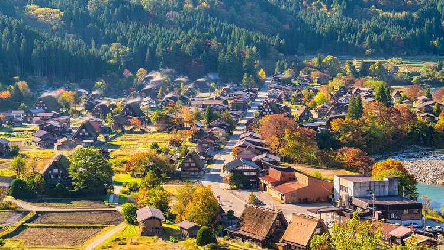
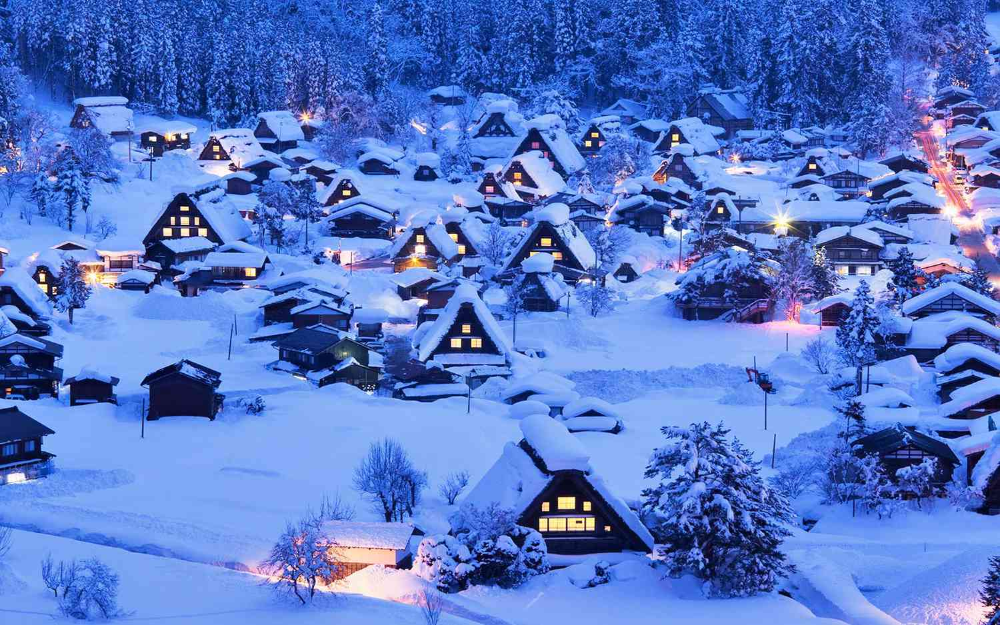

שיראקווה, יפן |
|
|
כפר ציורי וחבוי עמוק בהרי האלפים היפניים. שירקאווה-גו מפורסם בבתי העץ המסורתיים שלו בעלי גגות הקש התלולים, שנועדו לעמוד בשלגים הכבדים של האזור. בחורף, כשהכפר מכוסה כולו בשלג ואורות חמים בוקעים מהחלונות, הוא נראה בדיוק כמו גלויה קסומה. |
  |
חזרה לדף הבית |
|